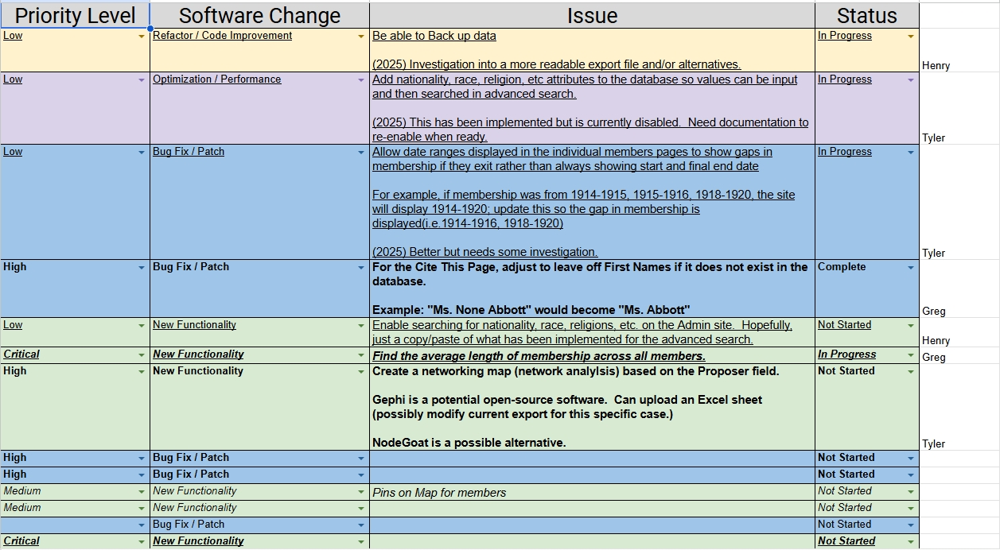
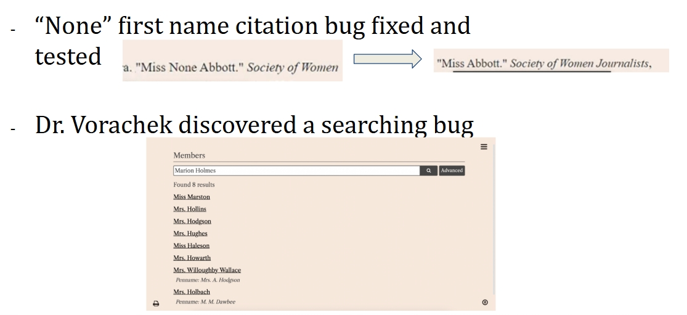
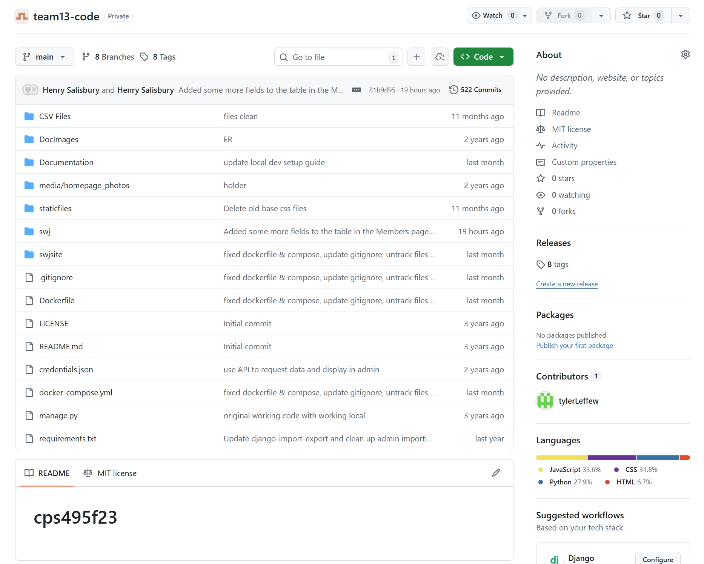
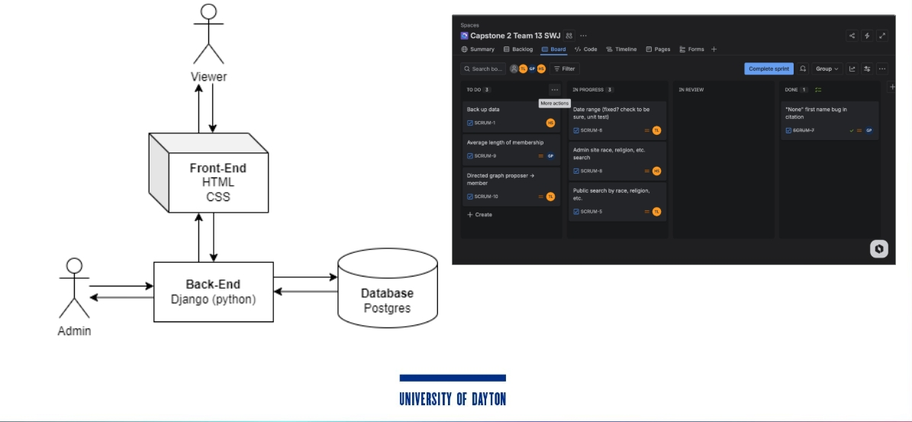

Introduction
Sprint 0 was focused on building a strong foundation for the project. In our meeting with Dr. Laura Vorachek, the team confirmed priority features, issues and bugs that needed to be addressed as well as improvements we could offer.
Project
Track our milestones from planning to final delivery. The active phase highlights what Team 13 is building right now.
Back to HomeSprint 0 was focused on building a strong foundation for the project. In our meeting with Dr. Laura Vorachek, the team confirmed priority features, issues and bugs that needed to be addressed as well as improvements we could offer.



During this phase, the team began implementing key fixes while also responding to guidance to migrate to a newer Django version, while solving admin login and local deployment issues.

Interactive Timeline
Click any card to expand the commit title, what changed, and why it mattered.
This update established the project’s working base and made the repository easier to run locally.
This round refined the local development workflow and made the project easier to configure safely.
This update corrected a display bug and added a clean local database copy for development and testing.
This change made the Django admin members page more useful by exposing more data and filters.